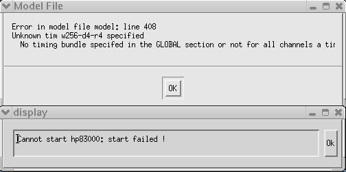

Feature dependency error
A feature dependency error indicates that parameters shown in the model file are not compatible with each other. If incompatible features are detected, a model file error window will be displayed and SmarTest will not start.
Procedure
- Examine the IOCHANNEL parameters in the model file to identify where an inconsistency exists between hardware, speed, memory, and timing bundle parameters.
- Reenter the appropriate information in the model file and save it.
- Restart SmarTest.
Example
Since the same timing bundle configuration must be used for all channels in a model file, a feature dependency error will occur if different timing bundle configurations are entered in the model file.

Functional changes
- Introduced before SmarTest 6.3.2